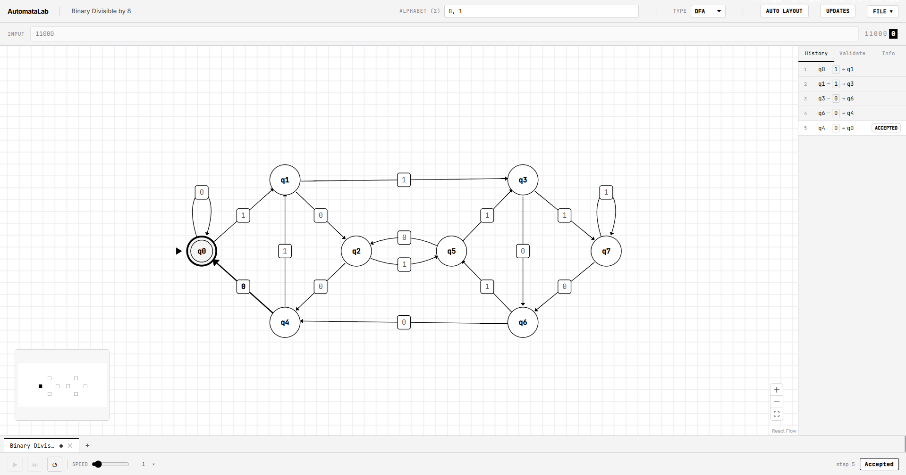

Live Web Demo

Launch Full SimulatorEngineered for theory. Built for speed.
Everything you need to design, simulate, and analyze automata.
Automata Design
Full Chomsky Hierarchy
Native support for DFA, NFA, ε-NFA, DPDA, NPDA, Turing Machines, and Linear Bounded Automata — all with deterministic computation trees.
Multi-tape Turing Machines
Design and simulate multi-tape TMs with per-tape read/write/direction controls and full tape visualization with head tracking.
Simulation & Analysis
Step-Through Debugger
Step forward and backward through computations. Visualize current state, input head position, stack contents, and tape simultaneously.
Reachability Analysis
Automatically detect unreachable, dead, and sink states. Visually highlight them on the canvas for instant feedback.
Computation Trellis
Visualize non-determinism correctly. Watch exact branch structures of NFA and NPDA computations unfold in a reproducible tree view.
Academic & Research Tools
JFLAP Compatibility
Import and export native JFLAP .jff files with zero dependencies. Seamlessly bridge classic academic tools with a modern interface.
Conversion Algorithms
NFA→DFA subset construction, DFA minimization, and others — all with step-by-step animated playback.
Scientific Export
High-resolution SVG, PNG, JFLAP (.jff), LaTeX δ-tables, and full trace CSVs for academic papers and presentations.
Tech Stack
React & TypeScript
Built on a robust foundation using React for component architecture and strict TypeScript for type-safe automata representations.
React Flow
Utilizes React Flow for the interactive, node-based canvas, providing smooth dragging, zooming, and edge routing.
Web Workers
Heavy computational tasks like reachability analysis and non-deterministic simulation run off the main thread.
Zustand
Lightweight, fast state management for the engine, separating UI rendering from core simulation logic perfectly.
Documentation
Deep dive into the architecture and API of AutomataLab.
Academic Use
If you use AutomataLab in your research, teaching, or publications, please cite it as follows:
@software{sinha2026automatalab,
author = {Sinha, Reeshav},
title = {{AutomataLab}: A Modern Visual Simulator for Automata Theory},
year = {2026},
url = {https://github.com/reeshavsinha/AutomataLab}
}